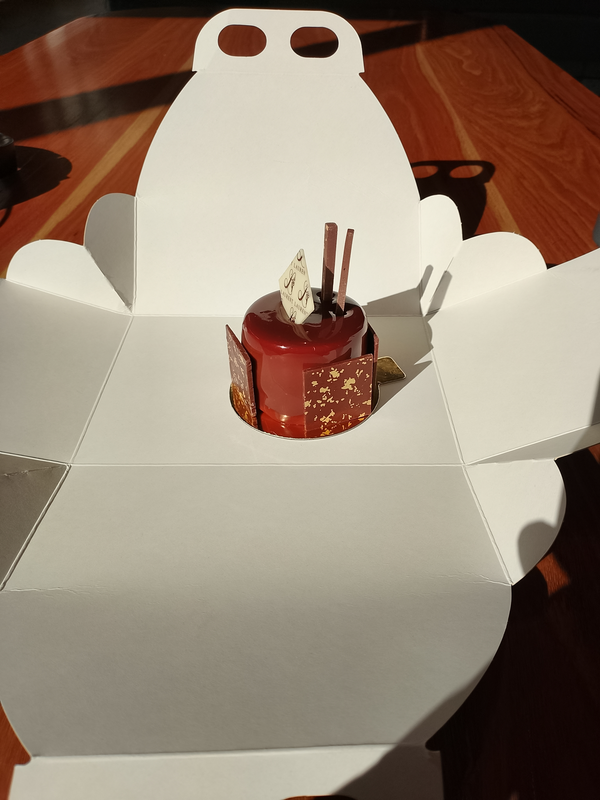

Home
Welcome to my restauraunt reserver page
This website is a proof od concept for a website to book reservations for restaurants. This platform is made so that anyone can schedule a dining experience with minimal effort.
Values and Target Audience
this website was built with the idea of convenience and accessibilty in mind as well as being able to introduce variety into the dining experience through the option of recommending restaurants. The target users intended on being helped would be anyone who needs to plan a reservation quickly, whether it's for family, business, romantic or travel purposes by allowimng a quick way to see multiple restaurant menus in one site to decide and book based on the users choice.
services of this website include restaurant discovery and recommendation as well as reservation.
